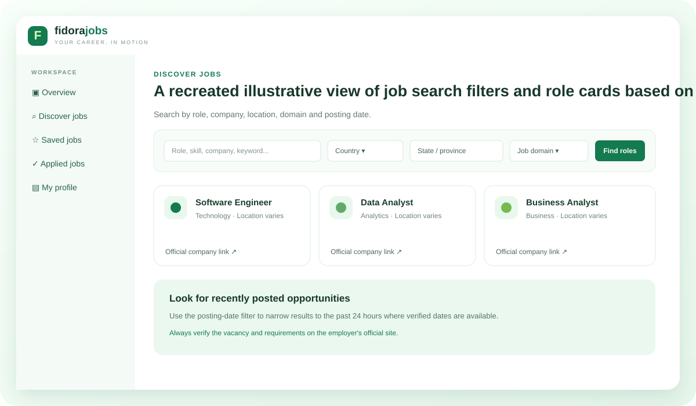

Past 24-hour focus
Prioritize job posts from the past 24 hours when posting timestamps are available. Check the employer's page for the latest status before applying.
Company career links
Every direct application link should take you to the employer's own careers page, where you can review requirements and submit your application.
Search with purpose
Search by keywords, country, state, city, job domain and posting date—without opening every company website one by one.

Use filters to narrow roles, then verify details on the employer career page.
What a job listing can look like
Your portal includes job cards with match estimates, save and applied controls, and direct application links. Check each employer's page for live status.
Software Engineer
Technology · Location varies · Example listing
Data Analyst
Analytics · Location varies · Example listing
Business Analyst
Business · Location varies · Example listing
Why direct company applications?
FidoraJobs is designed to reduce time spent searching across separate sites. It does not guarantee an interview or selection; employers make all hiring decisions.
See tracking and resume tools →